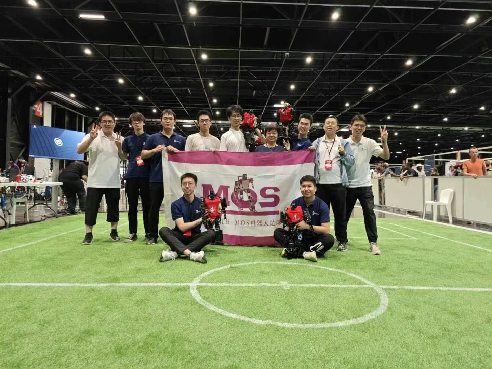
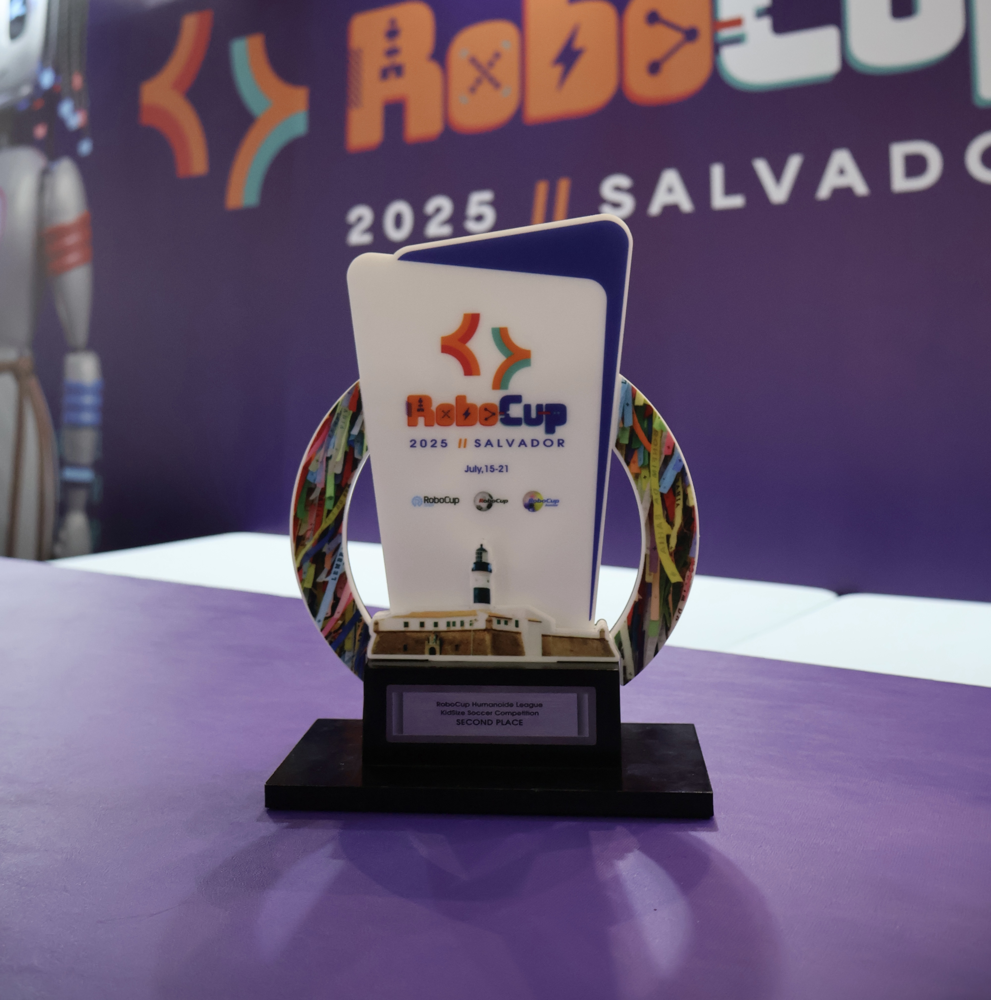

Project Background¶
An introduction to RoboCup, the Tsinghua robotics team, and MOS-9
THMOS and RoboCup¶
RoboCup, short for the Robot World Cup Initiative, is one of the major research-oriented robotics competitions in the world. It was founded to promote research and development in artificial intelligence, robotics, and related fields. Most participating teams come from universities, and each team is required to build its own robot, so the competition is a strong test of a team's robot system development capability.
THMOS, short for Tsinghua Master of Soccer, is a robot soccer team under FuRoC, the Future Robot Club at Tsinghua University. FuRoC has a total of three teams that participate in RoboCup every year: THMOS, also called the MOS team, Hephaestus, and Tinker. These three teams participate in three different categories: Humanoid League KidSize, Humanoid League AdultSize, and @Home.
Many people may be more familiar with Tsinghua's Hephaestus team from the Department of Automation, because they won the RoboCup championship in 2025, which had long been the goal of the whole club. I am also from the Department of Automation, but I did not join Hephaestus. When I joined the club in 2022, Hephaestus had not participated in the competition for several years and there was basically nobody left on that team. It was only in 2024 that Hephaestus returned to the Adult division. So when I joined FuRoC in 2022, there were only two active teams in the club, and I have been involved in the development of Kid-Size humanoid robots in THMOS ever since.
RoboCup has many categories. Soccer focuses on football matches, Rescue targets rescue scenarios, @Home targets home environments, Industrial targets industrial applications, and RoboCupJunior is for high-school students. RoboCup Soccer includes the Humanoid League (Major), Standard Platform League (SPL), Small Size League (SSL), and Middle Size League (MSL). The Humanoid League was further divided into Kid-Size and Adult-Size until 2025, and from 2026 onward it is reorganized into Small, Middle, and Large divisions.

Among these, the Humanoid League (Major) is the category where humanoid robots play soccer. Before and including 2025, each team had to develop its own robot for the competition. Because humanoid robot systems are extremely complex, this category places greater weight on system integration capability. Teams that can build better hardware platforms and apply better motion-control algorithms have a higher chance of winning. The Standard Platform League uses standardized commercial platforms. Previously, the only standard platform was the NAO robot. Since the hardware is identical across teams, winning and losing depends solely on software capabilities such as perception, localization, and planning and decision-making. As a result, teams in this category are usually much stronger in software than teams in the Major division. Small Size League and Middle Size League use multiple wheeled robots as players on the field. These categories do not emphasize hardware platforms, and Small Size uses global localization, so they place even more emphasis on decision-making strategies and strategic game play.


THMOS competes in the Humanoid League Kid-Size category, using a self-developed robot platform. When I first joined the club as a freshman in 2022, the robot was little more than a shell, and most of the algorithms did not work. I initially worked on vision, using YOLO object detection to identify robots, the ball, goalposts, and corner landmarks on the field. The robot shown below is the one we used in 2022 and 2023, called MOS8. The name comes from the fact that it was the team's eighth-generation robot, although I had never seen any version earlier than MOS8. This robot used a monocular camera, Dynamixel servos, a TX2 for compute, ZMP for walking, and hand-tuned dynamic sequences for recovery after falling. The robot's performance was poor. However, senior teammate Wu Qi was excellent and led us through all the modules, eventually making the robot learn to kick the ball.


Because of the pandemic, the 2022 RoboCup world competition was held online as a simulation competition. Fortunately, we were able to attend the 2023 competition in France. Because of the pandemic, many teams' robots had regressed, but we ourselves made substantial progress that year, going from a robot that could barely move to one that could kick. We scored four goals at the world competition and finished in fourth place. We met some very strong opponents there, such as the local French team Rhoban, who won the 2023 championship through excellent mechanical design and outstanding passing and decision-making. The Japanese CIT team had excellent mechanical design as well, but slightly weaker software, and took second place. This made us realize that to win this category, a team needs to be strong in mechanical design, system design, vision and localization, and planning and decision-making all at once.


Starting in 2023, more and more robots driven by servo motors began to appear, such as ARTEMIS from RoMeLa, Cassie from Agility Robotics, GR-1 from Fourier, and H1 from Unitree. Servo motors offer high power density, strong dynamic performance, and support both position and torque control, making them the natural choice for the next generation of robots. At that time, however, Kid-Size teams were still mostly using traditional servos. Since servos have lower power density, moving to a next-generation actuator was necessary to improve dynamic performance. We wanted to build a next-generation Kid-Size robot, so we began to consider developing a new platform.
Starting in 2023, we began designing the next-generation robot from the configuration level onward, but for various reasons the development was interrupted. In 2024, our progress was limited to upgrading the TX2 to Orin Nano, replacing the monocular camera with a Zed Mini stereo camera, and updating the localization algorithm. Although the kicking performance improved a lot, in the quarterfinals the opposing robot walked very stably while ours would fall down after even slight contact. As a result, we failed to score and were unfortunately eliminated.
RoMeLa started building servo-driven robots much earlier. They designed their own motors and their entire robot system themselves. Adult-Size is very difficult for university teams because humanoid R&D consumes a great deal of resources. As a result, there were only four or five teams in that category, and each team fielded only two robots. Dennis Hong, however, is deeply passionate about RoboCup. After many years of effort, his team finally defeated the traditional powerhouse NimbRo in the 2024 final and won the championship, demonstrating that servo-driven robots are indeed superior to traditional servo-actuated robots in this context. I was fortunate to witness RoMeLa win that championship, take a photo with Dennis Hong, and exchange many ideas about robot design.
In 2023, Booster Robotics was founded and managed to build a humanoid robot in only a few months. Company staff then became the main team members participating in the 2024 competition, and this was when the Hephaestus team returned to RoboCup. However, they still used the earlier MPC plus WBC approach, and because they had not optimized it for as long as RoMeLa had, their performance was still not as strong. Still, the early form of T1 had already appeared, and they were evolving quickly.
THMOS cooperated with Fourier in 2023, and Fourier provided the GR-1 robot to support our participation in the Adult division. But GR-1 was not designed specifically for the competition. Many aspects such as height, weight, and head design were not optimal, and its motion-control capability was not especially strong. On top of that, our undergraduate team of only a few people did not have strong engineering capacity, so we did not achieve a good result. Even so, it was a meaningful attempt.


MOS-9¶
The year 2024 was a major disappointment. We should have achieved a better result, and we knew we needed to do more work, but our progress never matched our expectations. At Tsinghua, very few people can persist with one thing for several years, and very few remain in the club for a long time. After each year's competition, at least half of the members usually leave the team. Students on some foreign teams can graduate through RoboCup-related projects, whether at the bachelor's or master's level. In some domestic universities, teams can earn recommendation-based graduate admission or overall score bonuses through competition results. But at Tsinghua, you receive no extra reward at all, and you may even hurt your grades or paper output because RoboCup takes so much time. Everyone works purely out of passion, and that kind of commitment is actually rare at Tsinghua, so we have always lacked both people and time.
Out of the dozen or so people who participated in the 2024 competition, probably only four or five remained. Jinyin and I still wanted to build the next-generation robot, so we began to seriously design MOS9, a Kid-Size humanoid soccer robot driven by servo motors. At first, even doing the mechanical design was very difficult. Even in the mechanical engineering department, many details of mechanical design are not really taught, such as how to design the configuration, how to design links and plate structures, how to consider strength and total weight, and even how to plan cable routing. We had almost no experience in any of this. So we bought a Bambu Lab printer and used printed parts for mechanical validation before machining, which helped speed up development. In fact, our pace was not slow. By 2025, we had already completed the full robot. Unfortunately, the Daran motors we purchased were of poor quality and we could not even tune the Kp and Kd of the position control loop properly, which led to a large mismatch from the simulated response. As a result, policies trained in simulation could not transfer to the real robot.


But Booster Robotics improved extremely quickly that year. Their T1 robot had already become highly complete, and they had also developed a small humanoid robot called K1. K1 was used in the 2025 Kid-Size competition. Our advisor, Professor Liu Li, had very good communication with Booster Robotics, and the Booster team said they would sponsor several K1 units for us before the competition, hoping that both of our teams could win world championships.
The rules of the 2025 world competition changed a great deal. Previously, active stereo vision was not allowed, so all teams uniformly used passive stereo systems such as the Zed series. In 2025, the rules were changed to allow the Realsense series. In the Adult humanoid category, robots were now required to recover after falling, aligning the rules more closely with Kid-Size, so the 2024 champion RoMeLa could not participate in 2025. Kid-Size also changed some rules, for example allowing commercial robots in the Major division. Previously, commercial robots were mainly associated with the Standard Platform League, such as NAO. In the 2025 Adult competition, only Tsinghua Hephaestus, THMOS, UT Austin, China Agricultural University's Shanhai team, and NimbRo from 2024 participated. Among them, Hephaestus, UT Austin, and Shanhai used the T1 sponsored by Booster Robotics, while we used Unitree G1. Booster Robotics improved tremendously that year, and Hephaestus won the championship. It was Tsinghua's first RoboCup championship after more than a decade of participation, and also the first championship ever for a Chinese team in the RoboCup Humanoid category.
Kid-Size also saw many traditional strong teams return, such as Rhoban. But both our MOS team and Germany's HTWK used the Booster Robotics K1 platform, and there was a generational gap between the robots on the field. K1 had an overwhelming advantage. Even Rhoban, the 2023 champion with a very strong software system, could not gain an advantage against K1. The two teams using K1 met in the final, but HTWK had previously competed in the Standard Platform League, where they did not need to work on hardware or control. As a result, they had accumulated more than a decade of experience in perception, localization, planning, and decision-making software, making them much stronger than us in that area. In the final competition, we finished in second place.



Another year later, MOS 9.2 was completed, and we finally understood how to transfer the policy from simulation to reality. But by then it was already a bit late. Humanoid robotics in China had been developing very rapidly, and K1 had already become a high-performance platform. MOS9 was now in a difficult position and could hardly compete directly with K1, and there were already many Kid-Size humanoid robots in China. MOS9 is not especially stable, because it is not a company product and nobody is doing industrial-level quality control. Many details in the mechanical design are still not polished enough. Still, as a student project, it is already close to the limit of what a few students can build in the spare time squeezed out from daily study and research.


The rules changed a lot again in 2026. The Standard Platform League was removed from the competition, and RoboCup no longer encouraged self-developed robots. Instead, any platform could be used in the competition. As a result, most of the robots on the field in 2026 were Booster Robotics T1 and K1, as well as Gaoqing's Pi-Plus. A large number of Chinese teams also entered, such as BISTU, Wuhan University, Hunan University, China Agricultural University, and China University of Mining and Technology. Before 2025, only Tsinghua and Zhejiang University had participated from China. In addition, former Standard Platform League teams such as B-Human, who had won championships there for more than a decade, brought very strong software system capabilities and therefore held a major advantage under the new rules.
Because the hardware platforms are now mostly the same, the ability to self-develop the full robot is no longer the single most critical competitive factor. The competition has in some sense merged toward a standard-platform style, with teams focusing more on software algorithms such as vision, localization, planning, and decision-making, and paying less attention to mechanics, systems, and motion control. Since the MOS team has accumulated more experience in full-robot system development over the past few years, we are now at a disadvantage under the new rules. If we want to remain competitive, we need to invest more effort into software development.
Conclusion¶
Some people believe that MOS9 has already lost its significance, because it can hardly compete with commercial robots and the MOS team is unlikely to achieve top results with it alone. But MOS9 was designed from the beginning as an open-source project. It does not aim only to win competitions. It also aims to serve as an open platform that improves the system development capability of the RoboCup community and helps push the community's technology forward. That is why we are open-sourcing the models, code, and design ideas behind MOS9. We hope this project can provide a relatively complete body of robot system knowledge for beginners, and offer design references for future robot developers. In the future, we will continue working hard and bring MOS9 back onto the competition field.